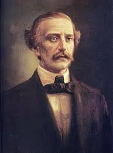

En la fragua de la escuela nuestra patria fue forjada,
y al calor de tu enseñanza le infundió vida sagrada.
La gloriosa Trinitaria que fundara tu heroísmo
fue la cátedra primera de moral y de civismo.
Fuerza era que un maestro preparara la conciencia
donde habría de nacer la soñada independencia.
Y es así como cantamos tus virtudes halla el estro,
junto al Padre de la Patria la figura del Maestro.
En la escuela se te honra por tus hechos sacrosantos
en las letras y las notas encendidas de su canto.
Y al honrarte recordamos tu patriótico heroísmo,
es al prócer y al maestro que los dos son uno mismo.
La Bandera dice Patria y al decirlo se revela
que es el alma de la patria señalándonos la escuela.
Video del Himno
Audio del Himno